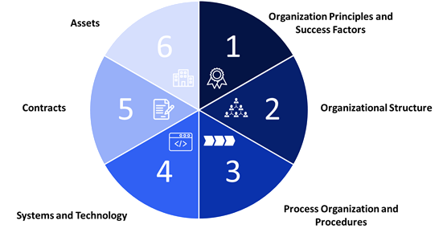

For CEOs and corporate boards across the globe, mergers and acquisitions (M&A) are a powerful tool to advance their strategic agenda and gain a competitive edge in the market. With new technologies emerging and consumer behaviors evolving at an ever-faster pace, successfully sourcing and executing attractive M&A deals has become essential for success in the face of escalating competition.
Not only do M&A allow companies to acquire new capabilities, including innovative products, proprietary technologies, intellectual capital, and qualified talent, but they are often critical to gaining economies of scale and constructing a compelling and differentiated portfolio of customer offerings. Of course, companies may choose to develop these capabilities internally, but experience shows, especially in today’s fast-moving industry landscape, that M&A offers a much more capital-efficient, and often faster, way to achieve these objectives than relying on organic growth and innovation. Most importantly, CEOs and corporate boards look to M&A transactions to generate meaningful revenue and cost synergies – i.e., to be able to generate higher revenues from a streamlined cost base. That is fundamental to the business case, based on which they approved the capital investment.
“CEOs and corporate boards look to M&A transactions to generate meaningful revenue and cost synergies – i.e., to be able to generate higher revenues from a streamlined cost base”
Much of the focus in M&A is on the transaction itself – identifying the right targets, running quality due diligence, and closing an attractive, accretive deal. These are no doubt important elements of the M&A process, but nearly all the value M&A deals promise to create hinges on how well acquirers execute the post-merger integration (PMI) work.
As the thrill of the deal wears off in the aftermath of closing, corporate teams often struggle to keep their focus on the PMI execution process, especially as day-to-day business demands continue at the same rate as ever. This is especially true for the PMI work required to integrate functional departments, such as Finance, HR, Technology, Legal or Compliance, which is where most of the cost synergies are hidden, waiting to be unlocked. And even if leadership is appropriately focused on PMI, the absence of an organized, efficient process to combine and restructure the functional departments can significantly affect the company’s ability to realize the target synergies.
The Stonewater Partners 6-Step Functional PMI Framework
To help clients avoid these pitfalls, Stonewater Partners has developed and applies a proprietary, structured framework and approach to PMI of functional departments (see Figure 1). The key to this approach is to isolate and clearly define all six components of the future operating model and follow a structured, disciplined process to execute the PMI analyses and restructuring necessary to successfully combine the two functional organizations and realize the synergies envisioned by the M&A deal.

Figure 1. Stonewater Partners 6-Step Functional PMI Framework
Interested in learning more? Find the next article in this series, “Post-Merger Integration Principles and Goals” here.